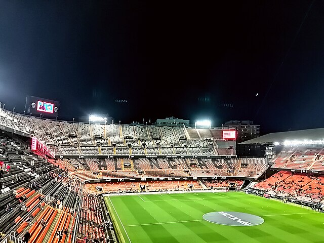

Valencia, Spain
Valenica houses one of the more unique stadiums that you can find in the country. This stadium, known as the "Mestalla," is where the Valencia CF soccer team plays. It doesn't have any sort of roof or head covering like the others do. Its capacity is 49,430 fans and was inaugurated in 1923.
